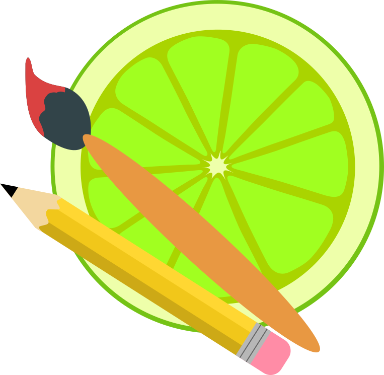

Hey there!
My name is Soto, and I create websites
Thank you for checking out my page. I am an undergraduate studying Multimedia Design at Copenhagen School of Design and Technology—better known by its acronym KEA—and this is the portfolio of my work over the first semester.
I chose this program because I have a passion for design and an addiction to problem solving, which to me is what coding is all about. I enjoy experimenting with visual aesthetics while pushing the boundaries of what html and css can do. In the future I hope to do web design professionally, and perhaps even go into the video games industry.
-
Gadehaveskolen
2012 | High School Diploma
-
Rødovre Gymnasium
2016 | Completed STX
-
Copenhagen School of Design and Technology
2025 | Ongoing

Logician by mind
Artist by Heart
I enjoy coding because I have a weakness for systems that work logically and efficiently, but my true passion is in art—in all its various forms!
In my freetime I enjoy digital art, crafts such as knitting and crochet, and music production. I also am a bit of a geek and love to relax with a good tv show, video games, jigsaw puzzles, or a good book. My labour of love is an epic fantasy book series I am writing, and which have been in development for many years.
The love of my life is my little black cat named Chibi. She's been in my life since I was 14, and she's my personal mascot here on the page—say hello!
Skills
 Adobe Photoshop
Adobe Photoshop- Paint Tool SAI
 Adobe Illustrator
Adobe Illustrator-
 Figma
Figma  Adobe InDesign
Adobe InDesign VS Code
VS Code